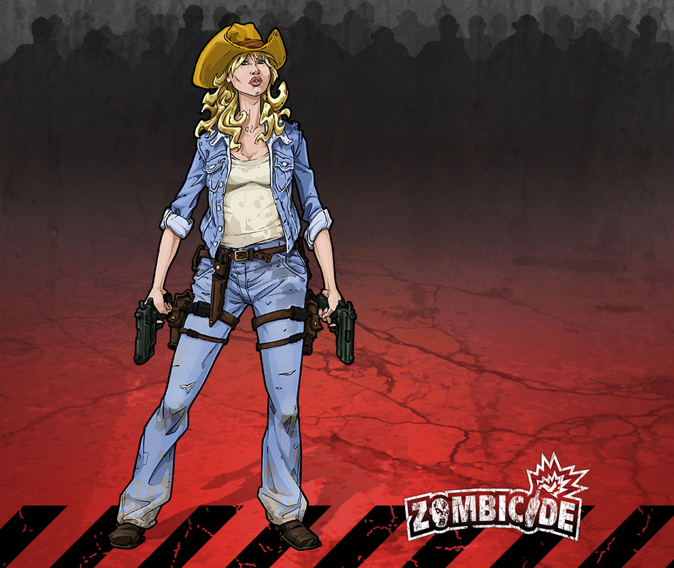
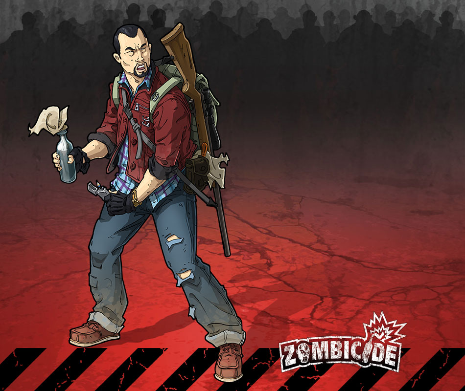
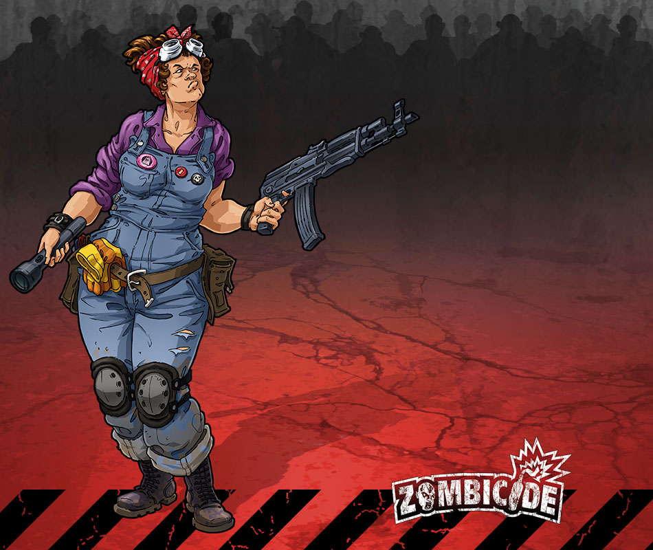
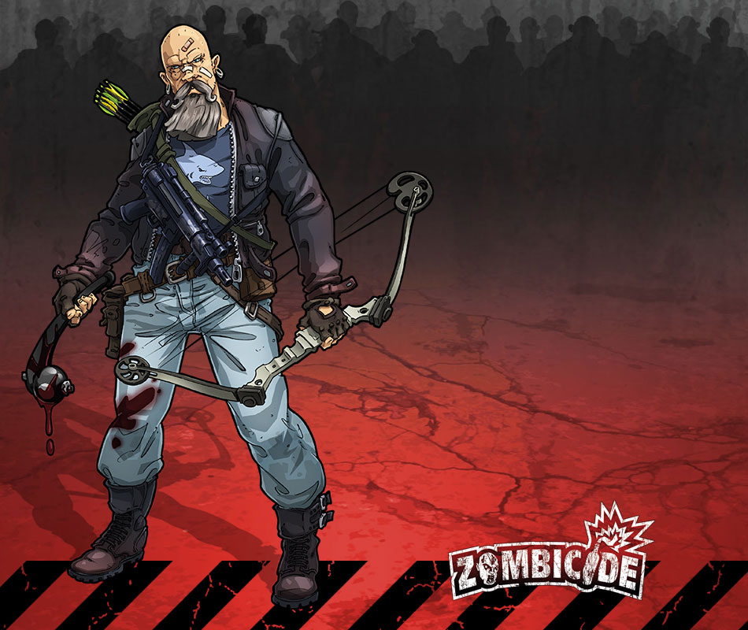

Jane

Du contrôle anti émeute ? J’vais t’en donner, moi, du contrôle anti émeute !
Jane est la gâchette la plus rapide de la ville. Elle conserve son côté cool et son humour au second degré même dans les pires situations. La connaître, c’est l’aimer !
Joe

Recycler pour sauver la planète prend un nouveau sens, pas vrai ?
Joe sait comment transformer les trucs les plus bizarres en quelque chose d’utile, voire de mortel. Avant les zombies, il était considéré comme un crétin. Aujourd’hui, tout le monde a réalisé que c’est un génie !
Louise

Toujours avoir les bons outils pour faire le sale boulot.
Louise n’est pas le genre de fille à se cacher au fond d’un abri. Elle a parcouru la ville infestée de zombies en de nombreuses occasions et a dissimulé des armes dans les endroits les plus inattendus. Personne ne peut la prendre par surprise !
Travis

Précision ou puissance brute? Pourquoi choisir ? Utilisez les deux.
Travis est un homme éduqué que la vie a transformé en tueur de zombies. Du genre patient et impitoyable, il y a une chose qu’il apprécie dans l’apocalypse zombie : c’est que les gens révèlent leur vraie nature.